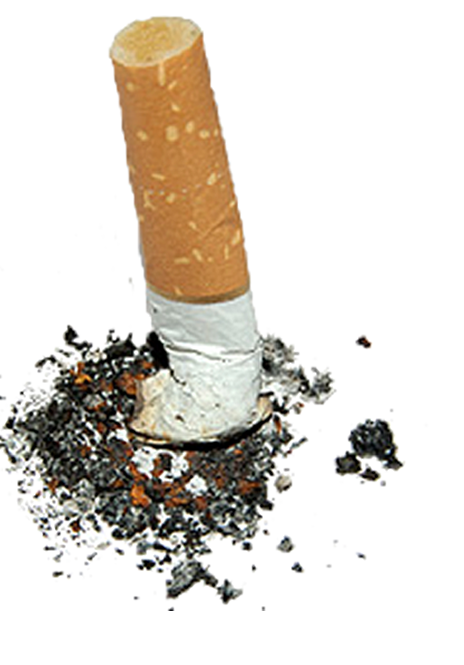

Des centaines de milliers d'objets
retrouvés sur les plages chaque année.
- 4
- 2
- 8
- 1
- 0
- 5
tonnes de détritus en 2013


13,497 SACS PLASTIQUES

154,873 MEGOTS

8,151 COTONS-TIGES

54,651 BOUTEILLES

45 PARASOLS
DERNIÈRES NEWS
Déchets aquatiques
Le Great Pacific Garbage Patch est une nappe de détritus dérivant dans l'océan Pacifique et se propageant depuis les années 1950. Elle est le fruit des courants tourbillonants qui attirent ainsi des ordures de tous les océans du monde et flotte entre la Californie et Hawaii.
Selon les estimations de la Commission côtière de l'Etat de Californie, cette immense poubelle flottante atteindrait aujourd'hui 3,5 millions de tonnes pour une superficie de 3,43 millions de km2, soit le tiers de la superficie de l'Europe. Au total, plus de 267 espèces marines seraient affectées par cet amas colossal de déchets.

February 12, 2008 - by Flash Gordon
Une mer de plastique
En 2014, l'ONG a insisté sur la participation citoyenne en incitant les organisateurs à remplir en ligne une fiche bilan fort détaillée, demandant notamment les proportions des différentes matières collectées, la présence de déchets en nombre important, ou des informations sur la gestion effectuée sur la zone de l'opération. "Cette fiche de quantification est élaborée pour offrir le compromis entre rigueur scientifique et possibilité de participation du citoyen. Surfrider collectera et compilera ensuite ces informations, en vue d'une retransmission et collaboration auprès des partenaires habituels, tels que le programme OSPAR" détaille l'ONG qui affine ainsi encore plus la qualité de son travail - à l'image de ce qu'elle a pu mener suite à la découverte, en 2009, de nombreux médias filtrants encore inconnus sur les côtes.
De la sorte, ces opération alertent tout autant que les observations menées dans le cadre de l'expédition 7ième Continent dont la dernière mission a observé de plus en plus de macro déchets à l'approche de la zone de concentration des courants : seaux, flacons, bottes, casques de chantiers, plastiquesdivers.
December 4, 1954 - by Albus Dumbledore
POIDS DES DÉCHÊTS
| Sacs plastiques | 1,35 tonnes | |
| Mégots | 15,5 tonnes | |
| Cotons-tiges | 0,8 tonnes | |
| Bouteilles | 5,5 tonnes | |
| Parasols | 0,2 tonnes |
"Mais ce n'est pas ce qui était visible à l'oeil nu qui était le plus impressionnant à l'intérieur et autour de la zone du gyre. C'est ce que nous avons trouvé juste sous la surface, visible seulement si on s'approche de près: des particules de plastique sous forme de paillettes très petites en quantité très importante. Nous naviguions sur un océan de plastique invisible à l'oeil nu ! Ces paillettes sont les résultats du travail de la mer et du soleil sur les macro plastiques qui finissent en mer" peut-on lire dans le dernier bilan mis en ligne...